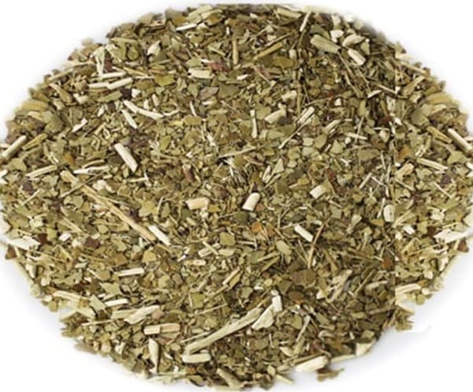

Son varios los procesos de productivos a los que se somete la planta de yerba mate y estos procesos determinan justamente los distintos tipos de yerba mate. A la hora de cebar mates debemos tener en cuenta que la estacionalidad de la yerba y la proporción de hoja, palo y polvo, es decir, el tipo de yerba va a influir directamente en la calidad del mate, su sabor y aroma. Las marcas productoras de yerba mate determinan exclusivamente estos procesos en sus yerbas dando origen a los distintos tipos de yerba mates que encontramos en el mercado, por ejemplo:
Yerba mate con palo

Esta es la yerba más tradicional o común en las culturas materas, es ideal para los amantes de los sabores suaves o para personas que no están acostumbradas a tomar mate con frecuencia, este tipo de yerba, según el código alimentario, tiene una proporción de 70% de hojas trituradas y 30% de palo.
Yerba mate sin palo
Esta yerba también es de las más comunes y a diferencia de la yerba con palo, esta ofrece un sabor mas fuerte y duradero, según el código alimentario la proporción de esta variedad de yerba mate debería ser de un 90% de hojas molidas y 10% de palo triturado.
Yerba mate saborizada
Esta variedad de yerba se elabora con esencias naturales ofreciendo sabores que van desde lo cítrico como naranja, limón o pomelo hasta mas exóticos como frutos tropicales o frutos del bosque entre otros.
Yerba mate Barbacuá o tostada
Barbacuá en Guaraní significa tostado y es un proceso ancestral, se podría decir, que utilizaban los aborígenes para tratar la yerba mate para su posterior consumo. Aquí la yerba mate se somete a un proceso de secado o tostado que cosiste en exponer las hojas al calor del fuego de leña por un día aportándole un sabor ahumado propio de las maderas utilizadas en el proceso.
Yerba mate compuesta
Esta variedad de yerba se obtiene con la mezcla de yerba mate con hiervas naturales como manzanilla, boldo, tilo, poleo y otras variedades de hiervas serranas que le aportan propiedades digestivas y sensación de bienestar y relajación, para lograr esta clase de yerba mate, el porcentaje de hiervas aromáticas no debe superar el 40% y el 60% restante debería ser de hojas de yerba mate.
yerba mate para terere
Este tipo de yerba se obtiene de una molienda mas gruesa y con menos cantidad de polvo, el mate tereré es una variedad de mate que se toma con agua fría o jugos naturales y si utilizamos yerbas tradicionales, el polvo y la molienda fina puede hacer que se obstruya o tape la bombilla, por este motivo la yerba ideal para tereré es gruesa y con poco contenido de polvo.
Yerba mate orgánica
Para la elaboración de esta variedad de yerba se tiene muy en cuenta el cuidado del medio ambiente y de las plantas, desde su siembra hasta la cosecha, para su cuidado se evita el uso de fertilizantes, agroquímicos y cualquier tipo de productos sintéticos que puedan dañar el medio ambiente, también se considera la utilización de materiales reciclables para la fabricación de los envases y empaques con los que se distribuye este tipo de yerba mate.
Yerba mate Brasileña
Este tipo de yerba mate o chimarrão, como se denomina en Brasil, se caracteriza por ser de un color verde intenso y de un amargor muy particular, esta variedad de yerba no cuenta con ningún proceso de secado, tostado o estacionalidad, sino todo lo contrario, directamente se cosecha, se tritura y se empaqueta para su consumo.